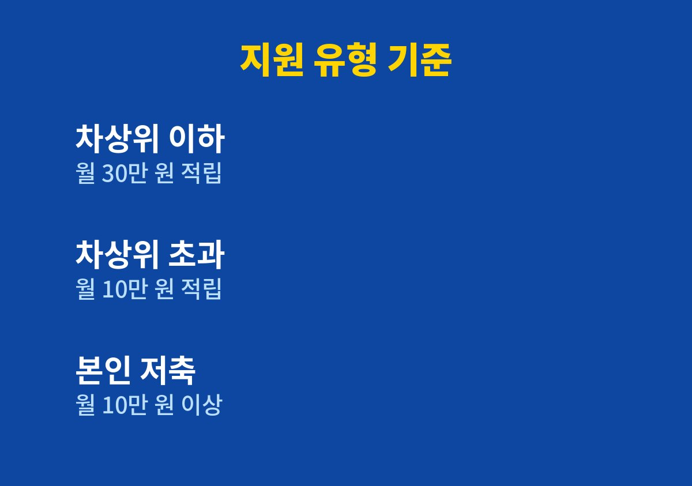
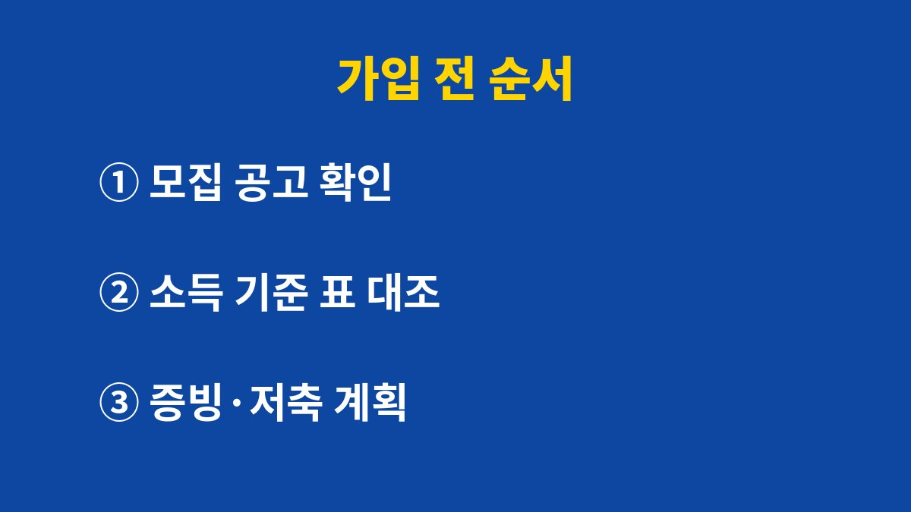

청년내일저축계좌는 본인이 매월 10만 원 이상 저축하고 근로·사업소득이 있어야 정부 지원금이 쌓이는 자산형성 제도이다.
2026년 11월 기준으로 서울 관악구청이 안내한 올해 모집 내용을 바탕으로 가입 전에 확인할 조건을 정리했다.
올해 신청 기간은 5월 4일부터 20일까지였고 이미 끝났다. 다음 모집 공고가 뜨기 전에 미리 해 둘 확인용으로 읽으면 된다.
관악구청 안내에 따르면 가입 대상은 만 15세 이상 39세 이하이다.
여기에 가구 소득이 공고에 정한 기준을 충족해야 하고, 본인에게 월 10만 원 이상의 근로·사업소득이 있어야 한다.
셋 중 하나라도 어긋나면 신청 단계에서 걸러진다.
가구 소득 기준의 구체적인 금액은 가구원 수마다 다르고 해마다 바뀌므로 공고에 실린 표에서 직접 찾아야 한다.
소득이 없는 학생이나 구직 중인 사람은 나이가 맞아도 소득 조건에서 막힌다.
반대로 소득이 너무 많아도 문제가 된다.
안내문에는 가입 후 유지 기준으로 청년 본인의 근로·사업소득 상한이 따로 있다고 적혀 있다.
가입한 뒤 소득이 크게 오르면 자격이 흔들릴 수 있다는 뜻이다.
예를 들어 올해 5월 모집을 놓친 사람이 다음 공고를 기다리는 동안 알바를 그만두면, 공고가 떴을 때 소득 조건부터 맞지 않게 된다.
그래서 소득 활동을 끊기 전에 모집 시기를 먼저 확인해 두는 편이 낫다.
나는 이 제도를 직접 신청해 본 적이 없고, 공개된 안내만 정리했다는 점을 밝혀 둔다.
| 구분 | 매월 정부 적립 | 근로소득장려금 총액 |
|---|---|---|
| 차상위 이하 | 30만 원 | 1,080만 원 |
| 차상위 초과 | 10만 원 | 360만 원 |
| 본인 저축 | 월 10만 원 이상 | 납입한 달에만 적립 |

안내문은 두 유형 모두 본인이 그달 10만 원 이상을 넣어야 정부 적립이 이뤄진다고 설명한다.
3년 동안 매달 넣는다고 계산하면 본인 부담은 모두 360만 원이다.
금액이 작아 보여도 소득이 불규칙한 아르바이트 직종에서는 매달 맞추는 일이 부담이 된다.
청년내일저축계좌가 맞지 않는 사람은 지출이 들쭉날쭉한 사람이다.
적립액이 크다고 해서 유형을 고를 수 있는 것은 아니다.
가구 소득 수준에 따라 어느 쪽에 속하는지가 정해지므로, 본인이 어느 유형인지는 신청 후 심사 결과로 알게 된다.
차상위 이하 유형이 3년 동안 받는 근로소득장려금은 안내 기준으로 1,080만 원이고, 그 밖의 유형은 360만 원이다.
재직 중이라면 급여명세서 같은 소득 증빙이 필요한지부터 공고에서 본다.
소득이 올라 상한에 가까워진 사람은 가입 후 유지 기준을 넘는지가 더 큰 변수이다.
월 10만 원 이상의 소득이 있어야 하므로 소득이 없는 달이 길면 증빙이 문제가 된다.
어떤 서류로 소득을 인정하는지는 공고에서 정한다.
신청 전에 주민센터에 서류 목록을 물어 두면 헛걸음이 줄어든다.
관악구청 안내에는 사업단 참여자를 위한 내일키움장려금이 별도로 있다고 되어 있다.
전월 12일 이상 참여하고 당월 10만 원 이상 저축해야 20만 원이 나오는 구조이다.
다만 Gateway과정, 인턴·도우미형, 근로유지형 참여자에게는 지급되지 않는다고 적혀 있다.
세 경우 모두 공통으로 걸리는 것은 매달 10만 원을 넣는 일이다.
적금을 처음 해 보는 사람이라면 월급날 바로 자동이체를 걸어 두는 방식이 가장 단순하다.
중간에 저축을 거르면 그달 적립이 빠질 수 있다는 점은 안내문의 조건에서 읽힌다.
교육 10시간은 자산형성포털의 온라인 강의로 듣는 방식이라고 안내에 나온다.
자금사용계획서는 만기 후 돈을 어디에 쓸지 적어 내는 서류이므로, 미리 생각해 두면 작성이 쉽다.

올해 모집은 끝났지만 다음 모집의 시기와 기준은 해마다 달라질 수 있다.
당장 할 일은 복지로에 올라오는 모집 공고를 살피는 것이다.
소득 기준이 애매하면 관할 주민센터 담당자에게 전화로 묻는 쪽이 가장 빠르다.
참고 자료: 서울특별시 관악구청 「청년내일저축계좌 안내」(2026년 11월 확인)
※ 2026년 11월 기준 공개된 정보를 정리한 글이며, 정확한 대상 요건·금액·신청 기간은 복지로·정부24·관할 주민센터의 공식 공고를 확인하길 바란다.